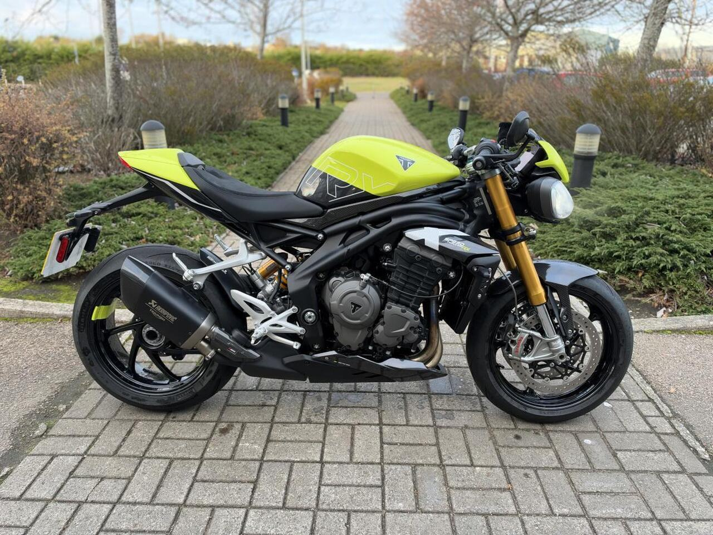

Yellow · 1 owner
2025 · Triumph · Performance Yellow
Speed Triple RX
2025 RX in yellow, 668 miles, one owner, Triumph approved with the first service done, at £15,995. The lowest mileage of the five, but it is 442 miles from Poole.
- Year
- 2025
- Miles
- 668
- Price
- £15,995
◉ Shirlaws Motorcycles, Aberdeen · ≈ 442 mi from Poole